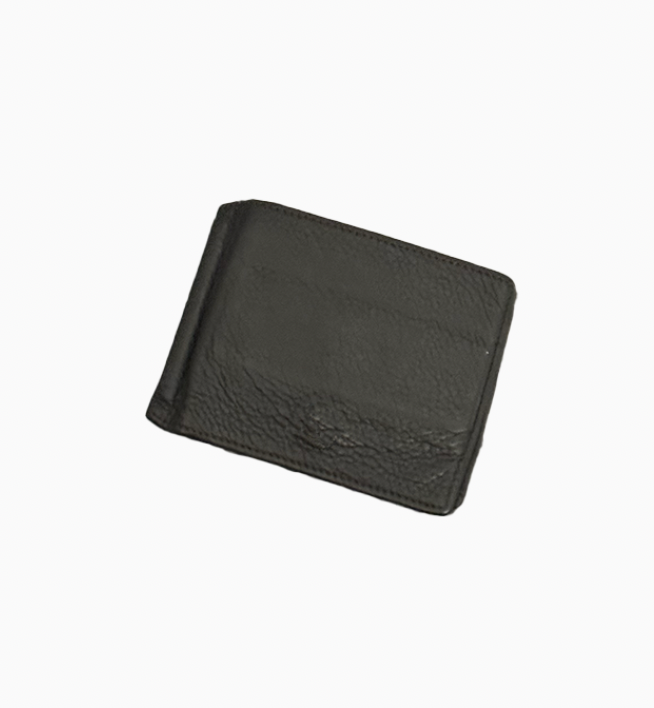

Wallet

Giorgio Armani Bifold Wallet
Size
4*3*0.5 inches
Timeline
Owned less than 2 years
Released Unknown
Description
A wallet containing three transactional cards and three IDs. Half of the time in my pocket, the other half in my bag. As essential as it is, it has been with me very often.
Memories
My father has gave it to me.
Dreams
Though it is essential, I do not care a lot about itself rather than a vessel consisting important things.
Wonders
I wonder if I will be able to keep it for a long time since I lost my previous one. And I want to keep the same item, I say I value the familiarity.